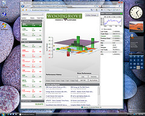

Uploaded to WindowsClient.net on 05-10-2007

Using The Finance Application
The application provides a 3D visualization into a hypothetical, static porfolio. It is important to note that this application is not bound to live data. To the left is a 2D list of stocks, grouped by Small Cap, Mid Cap and Large Cap stocks. By clicking on a stock in this list, detailed information about the stock can be seen in the far right column. If you hover over the 2D stock chart, it will expand for an easier reading experience.
Hovering over a stock will group it with other stocks of the same sector within that market size. For example, hovering over ArvinMeritor will also highlight Men's Wearhouse, both part of the consumer segment. This becomes interesting in terms of the 3D chart, in the center of the application. You can see how the labels for the X and Y axis update when different stocks are hovered over. The hover action pinpoints that particular grouping of sector and market cap, aggregating the results. So, one can immediately get a sense of how Mid Cap stocks in the consumer sector are doing -- in this case, not well, as can seen from the long red bar.
The application is two way, in that you can also interact with the 3D bar chart and see the corresponding 2D areas become highlighted. If you leave the mouse over a given bar for 1 second, you will get information about that bar as well, letting you know what aggregate of stocks that bar represents as well as the market cap and sector.
If you click on the the Woodgrove logo, the 2D section will animate away, allowing you to focus on the 3D. Holding the right click button down of the mouse will allow you to trackball the graph. In addition, you can compare stocks against the DJIA if you click that button. (The other comparison buttons aren't wired up.) If you then move the slider, you will see an animation between the current data and a date in the past.
Lastly, by switching in the drop down from Day % Change to Dollar change, the bars turn to columns.
Decomposing The Finance Application
While all of the data is static, the application is designed to support databinding to live data and could be done with a nominal amount of effort. Right now, everything is databound to the static asdf.xml file. However, changing the databinding to a webservice would allow for this application to show real data.
You'll notice that the project is factored into multiple components. The WoodgroveFinanceApplication doesn't really do anything but hold the WoodgroveFinanceHost, which sets up the layout and handles the interaction between the 2D and the 3D. The WoodgroveFinanceStockChartFrame then holds the 2D pieces and the WoodgroveFinanceStockChart3D holds the 3D pieces. By doing this componentization, all of the functionality is really contained in controls, such that they can be added to a different project quite easily. If just the 3D section were desired, it is already isolated from the rest of the application.
You can open the project in Expression Blend, which is very cool. One could customize the look and feel from within Blend. It also demonstrates how Expression Blend supports opening .sln files and working with multiple projects.
Lastly, it is worth commenting that the 3D graph is based on work done by Robert Hogue (http://www.therhogue.com/WinFX/). Some of the explanation in his download pack is germaine to the code in the 3D part of the application.
Enjoy!